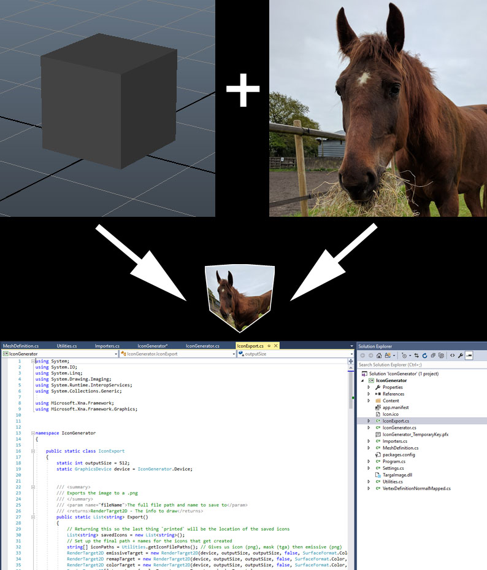

Welcome to the Wonky Horse!
The Wonky Horse got its name simply as there aren't many cross sections between people who are mildly obsessed with ponies, and also technology. One day The Wonky Horse will be a full-fledged website and horse farm!
Portfolio
Software Development
Icon Generator
The Icon Generator is a custom icon creation tool that I made using C#, MonoGames, and Assimp C# Bindings. In game development, it is often necessary to create icons for a large number of assets, when done by hand this becomes a time consuming task. This tool is designed allow artists to automatically create high quality icons with a border while exporting the asset from Maya or by batch creation. It allows the angle, padding and framing to be adjusted based on data driven asset type information. This information could be assigned in the .fbx file as an attribute for specific overrides or based on the parent types generic settings stored in a .json file. As this was a tool made for an employer I am unable to provide the tool itself but am happy to share more code samples from the project as well as more in depth information upon request.
Puppet Pony
The puppet pony is in development and is a JavaScript bound Box2D project. It will eventually take the place of the top scene for the website once complete. Go ahead and select a part and move him around a bit!
Technical Art
While I am moving towards a strictly software development career path, I have years of experience as a Technical Artist which allowed me the opportunity to work on a large variety of tasks involved with Game Development. The following is my last demo reel created December of 2016.
About
Hello, I am Kristen Griffin and the Wonky Horse is home to my portfolio and play space. I am on a learning adventure, as such I will be adding to my portfolio as well as the interactivity and look of this site. Since I am more of a coder type, I owe thanks to Leanne Reed for her help in making the artwork for this page.
Contact
Kristen Griffin
kristen.sue.griffin@gmail.com